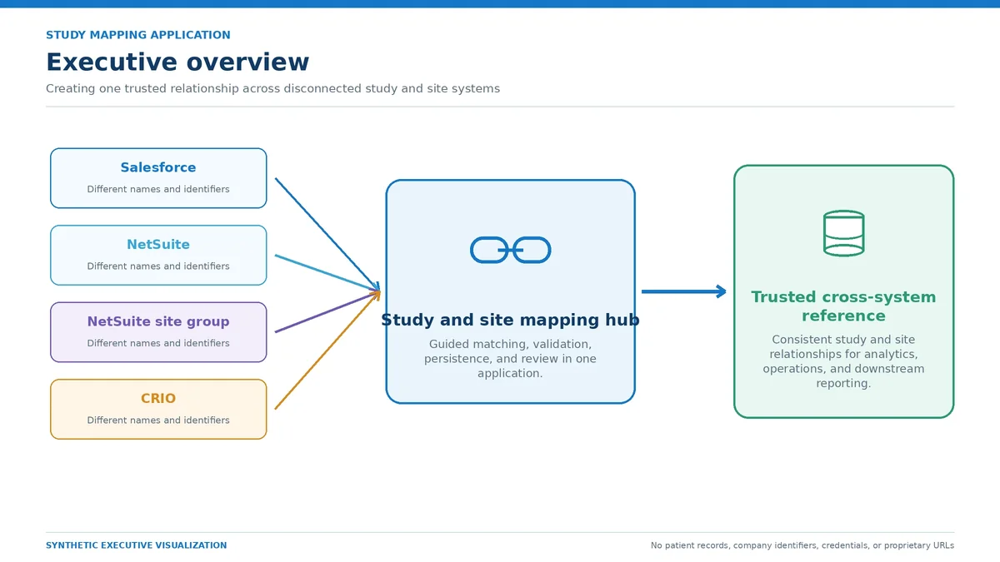
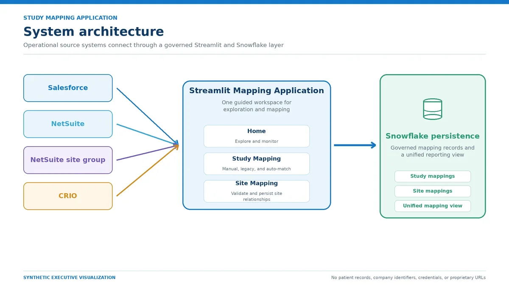
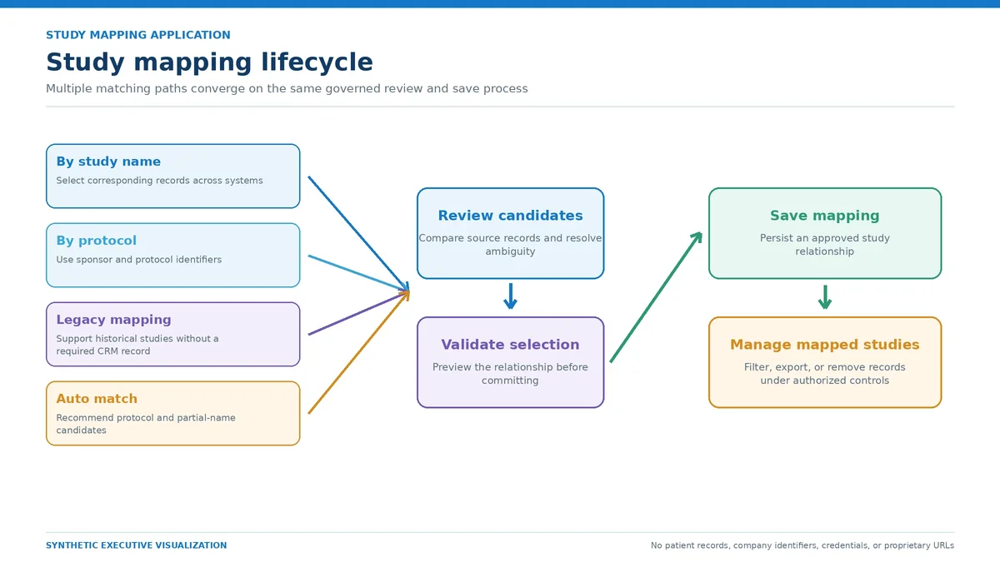
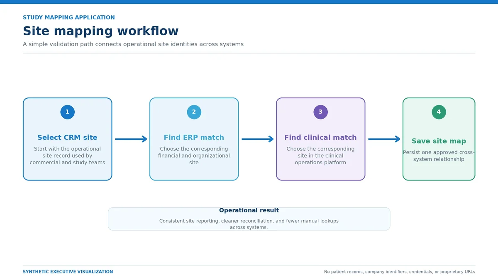
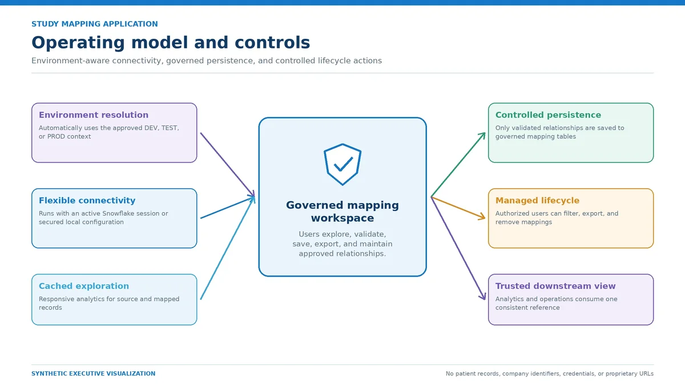

Day job · Streamlit, Snowflake
Study mapping app
A Streamlit app that matches study and site records across Salesforce, NetSuite and CRIO, and stores approved matches in Snowflake.

The question
The same study or site had different names and IDs in the CRM, the ERP and the clinical trial system. Reports that joined them came out with gaps and mismatched totals, and fixing it meant manual lookups.
What I did
I built a Streamlit app where people search, compare and approve matches: by study name, by protocol, legacy mappings, or auto-match suggestions. Approved relationships are saved in Snowflake, so every downstream report uses the same cross-system IDs.
Screens and diagrams



